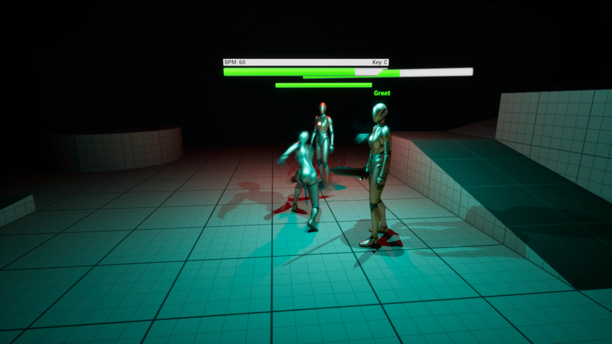
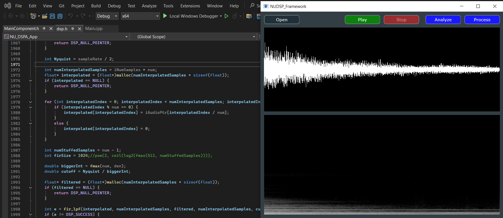
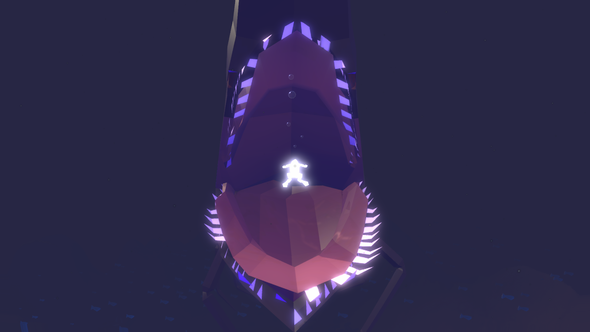

Tyler Chung
Herricks Career Day
Software Development Engineer in Test at Major League Baseball
Northeastern University Alum, Computer Science and Music with Concentration in Music Technology, Class of 2025
Herricks Alum, Class of 2021
Software Development Engineer in Test at Major League Baseball
Northeastern University Alum, Computer Science and Music with Concentration in Music Technology, Class of 2025
Herricks Alum, Class of 2021

In the summer of 2024, I was a test engineer intern at Major League Baseball. I joined baseball enterprise, a large team of software engineers and product managers responsible for league-wide internal applications. Within it are various sub-teams, which I bounced between depending on the applications I was working on. Some projects I worked on include:
... and various other applications since I returned to MLB in August 2025. As a software test engineer at MLB headquarters in New York City (directly across the street from Radio City Music Hall), I am responsible for creating (coding) test automation for enterprise applications; specifically API, UI, database, and load testing. Recently I have been contributing to MiLB Hub, the primary application for minor league operations which spans 120 clubs, as well as teams outside of enterprise, including Commerce (MLB TV subscriptions) and Fan Identity (Fan logins for public applications).
One of the most recent events was the Lunar New Year Celebration at the office, hosted by MLB Asian, one of the many employee resource groups (ERGs).
Feel free to reach out if you have any questions about the sports industry.



I knew I wanted to go into computer science since high school. I took Computer Science I & II, and AP Computer Science. However, athough I was strong in math, I also had a passion for music. As someone with a creative heart, I integrated my studies with music and music technology.
Before MLB, I did a co-op as QA (quality assurance) automation intern at Entrust Corporation (a cybersecurity company), where I used tools to create UI automation to test their internal commerce web portal. As a co-op, I worked alongside a small QA team for 6 months in Concord, MA.
After that, I continued as a Northeastern student and worked on various projects. There, I focused on game development and digital audio signal processing. You can learn more about these projects here.
For those interested in pursuing computer science, I one core piece of advice for high school students that could give you become successful in today's world. Always ensure you have a direction you want to go in. Software is a huge field, and there are many specialties, whether that's IT, data engineering, AI, test engineering (like me), etc. Focus on a particular industry you are interested in; for me, that was entertainment. Develop your skills and become strong in one specific area. On the other hand, you should also be open to discovery and be able to pivot. An important part of your journey is learning about yourself, so be prepared to explore.
Feel free to reach out if you have any questions about my journey as a software engineer.

Music has become a part of who I am. I played the flute all through high school and freshman year of college. During my junior and senior years at Herricks, I also focused on music composition, which I would later continue to do and integrate with songwriting and technology.
Music has been changed by technology in many ways, and at Northeastern I wanted to focus on its intersection with music. My major focuses were game audio, digital signal processing, music and mathematics, and acoustics. I was Vice President of NUSound, the Northeastern Chapter of the Acoustical Society of America.
As part of my music technology capstone, I integrated sound into a video game called Heqet using audio middleware, composed the game's soundtrack, and researched underwater acoustics. If you're curious, you can read the paper here.
In summer 2025, I was a conference assistant at the 50th anniversary of the International Computer Music Conference (ICMC), hosted by Northeastern University in collaboration with New England Conservatory, Berklee College of Music, Massachusetts Institute of Technology, and Emerson College. The conference was made up of many performances and research papers from all around the world, from students to veteran professionals. I personally was responsible for preparing the programs and helping to setup the concerts. Above is a photo of one of the performances. You can check out the website here.
To this day, I write songs under the name Cerii, looking to release my album Summer Night Rain this year.
Feel free to reach out if you have any questions about the subfields of music technology, the ICMC, or my musical inspirations / favorite genres.